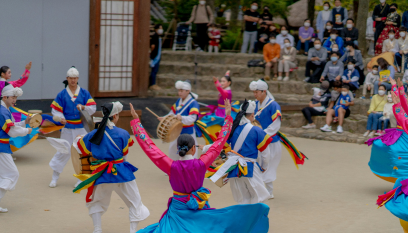
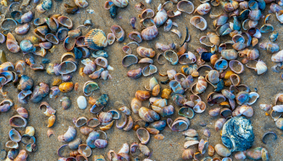

청산도 일상풍습
청산도에는 이미 세상에서 사라져버린 것들이 고스란히 남아 있습니다.
빠르게 변하는 세상 속에서 아무 곳 에서나 볼 수 없는 귀한 보물이 천년의 가치를 두고 이곳에 있습니다.
-
장례문화 꽃 상여
꽃 상여의 사귀에 묶어, 자기 명에 가면 천이 처지고 자기 명에 못 가면 천이 하늘로 뜬다는 설도 있다.
-

청산도 도락리 정월굿
정월굿은 마을의 잡귀를 쫓고 풍년과 풍어를 기원하며 주민의 무사안일을 염원한다.
-

청산도 도락리 갯영 공표
갯 바탕을 개방 구역을 정하여 1일 개방하고 주민 모두가 골고루 취할 수 있게 하는 마을 규칙이다.
청산도는 쉼 이다
SLOW CITY
자신을 존중하며 느긋하게 산다는
뜻으로 앞을 향해 치닫고 살아온
지난 세월을 조용히 돌아보는
시간을 갖는 것입니다.